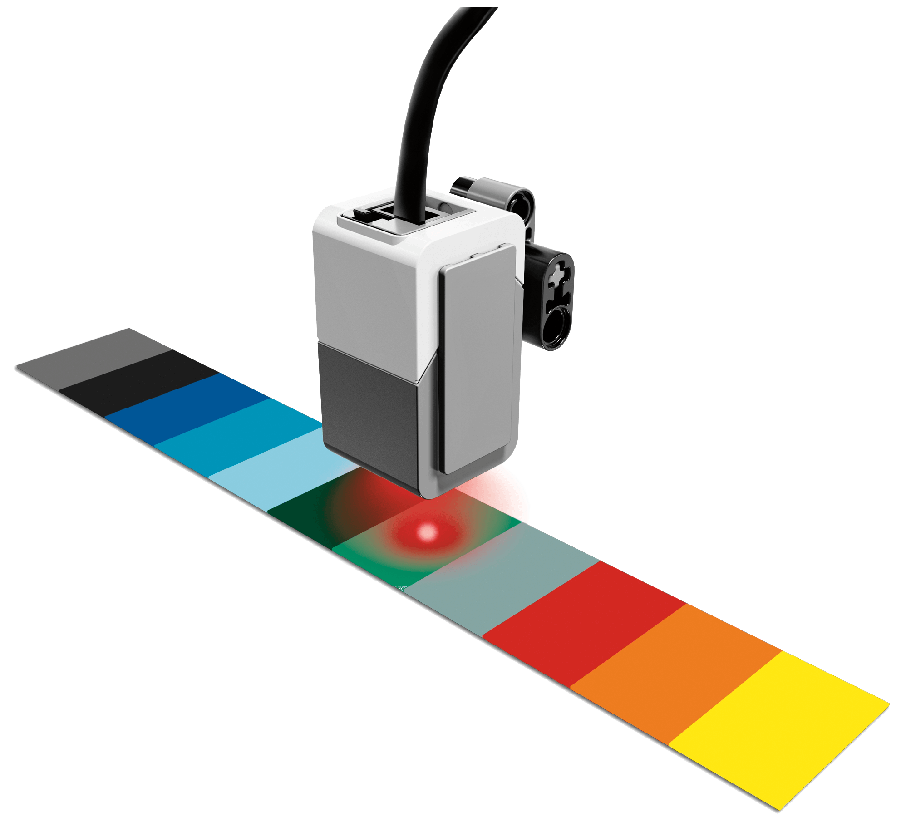
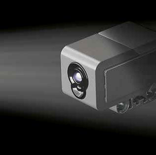
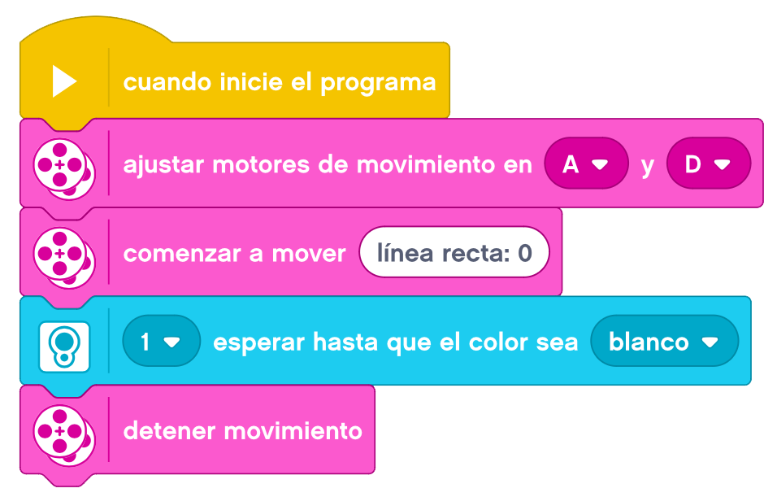
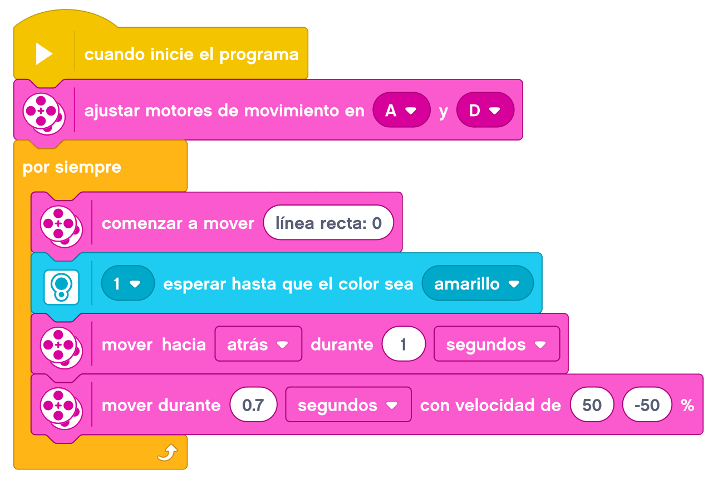
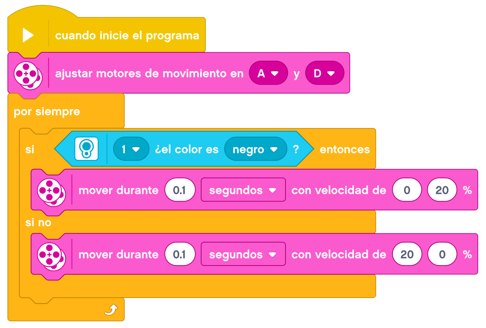

En esta actividad aprenderemos a utilizar el sensor de color para detectar los colores por los que nos vamos moviendo.
El Sensor de Color EV3, es un sensor digital que puede detectar el color o la intensidad de la luz que ingresa por la pequeña ventana de la cara del sensor.
El sensor puede detectar siete colores diferentes: negro, azul, verde, amarillo, rojo, blanco y marrón.
Un objeto que no sea de ninguno de estos colores se puede detectar como «Sin color» o como un color similar.
Por ejemplo, un objeto naranja puede detectarse como color rojo o amarillo, según cuanto rojo tenga ese
naranja, o como marrón o negro si el naranja es muy oscuro o está muy lejos del sensor.
Este sensor puede utilizarse en tres modos diferentes: modo color, modo intensidad de la luz reflejada y
modo intensidad de la luz ambiental.
En Modo color, el sensor de color reconoce siete colores: negro, azul, verde, amarillo, rojo, blanco y marrón, además de Sin color. Esta capacidad de diferenciar los colores significa que su robot puede estar programado para clasificar pelotas o bloques de colores a medida que los detecta o para detenerse cuando detecta el color rojo.

En Modo intensidad de la luz reflejada, el sensor de color mide la intensidad de la luz que se refleja desde
una lámpara emisora de luz color rojo.
El sensor utiliza una escala de 0 (muy oscuro) a 100 (muy luminoso). Esto significa que tu robot puede estar
programado para moverse sobre una superficie blanca hasta detectar una línea negra o para interpretar una
tarjeta de identificación con código de color.
La razón de muestreo del Sensor de color es 1 kHz/seg. Para optimizar la exactitud, en modo intensidad de la
luz reflejada, el sensor debe sostenerse en un ángulo recto, cerca de la superficie que examina, pero sin
tocarla.

En Modo intensidad de la luz ambiental, el Sensor de color mide la intensidad de la luz que ingresa en la
ventana desde su entorno, como la luz del sol o el haz de una linterna.
El sensor utiliza una escala de 0 (muy oscuro) a 100 (muy luminoso). Esto significa que su robot puede estar
programado para emitir una alarma al salir el sol por la mañana o para detenerse si las luces se apagan.

Empezaremos por montar nuestra Base Motriz a la que añadiremos el Sensor De Color.
Haremos una linea recta al final de la mesa con la cinta aislante (puede ser negra o de cualquier otro color).
El reto consiste en parar nuestro robot cuando el sensor de color detecte la linea, independientemente de la
distancia a la que se coloque el robot.
Un ejemplo de como podemos resolver el reto es el siguiente.

Vamos a programar nuestra base motriz para que nuestro robot pudiera participar en un combate de Sumo.
Lo que haremos será preparar un recinto con cinta aislante de cualquier color. Nuestro robot tendrá que
permanecer siempre en movimiento y dentro del recinto sin salirse. Para ello, tenemos que avanzar hasta
encontrar la línea de color, dar marcha atrás y hacer un giro sobre si mismo de unos 90º antes de volver a
avanzar.
Un ejemplo de como podemos resolver el reto es el siguiente.

Ahora vamos a jugar un poco con el sensor de color. Vamos ha programar diferentes reacciones dependiendo del
color que detecte. Por ejemplo, acelerar y hacer sonar un sonido al detectar un color determinado, decelerar
y hacer sonar otro sonido al detectar otro color, dar vueltas y mostrar una imagen en la pantalla al detectar
otro color, etc
La programación en este caso dependerá de la reacción y el color que queramos controlar.
Por último, haremos un sigue lineas. El reto consiste en que nuestro robot siga un circuitop con curvas
siguiendo la linea continuamente. La forma de hacerlo es que el sensor de color, cuando detecte el color de
la línea, gire hacia un lado y cuando detecte el color de la mesa gire al lado contrario. Estos giros tienen
que ser cortos y a velocidad reducida.
Un ejemplo de como podemos resolver el reto es el siguiente.
